.jpeg)
.jpeg)

Selecciona un libro
mira los libros que estan en oferta
Aquí aparecerá la descripción


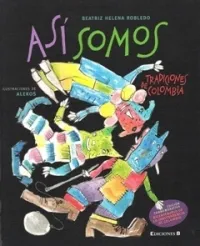

Bienvenido a Maxilibros
Bienvenido a Maxilibros, un espacio digital creado para todos aquellos que encuentran en la lectura una forma de explorar nuevas ideas, emociones y conocimientos. Aquí encontrarás una amplia variedad de libros organizados en diferentes categorías, pensadas para adaptarse a todos los gustos, desde historias llenas de suspenso hasta relatos profundos que invitan a la reflexión personal.
Este sitio ha sido diseñado para que puedas navegar de manera cómoda y descubrir contenidos de forma intuitiva. Cada sección ha sido estructurada cuidadosamente para ofrecer una experiencia clara, donde la información fluye de manera organizada, permitiendo que el usuario explore sin dificultad cada uno de los elementos disponibles.
Explora nuestras categorías
En Maxilibros podrás encontrar diferentes categorías literarias como novela urbana, terror, romance, ciencia ficción, desarrollo personal y thriller. Cada una de estas categorías agrupa obras que comparten características similares, facilitando la búsqueda y permitiendo al usuario descubrir nuevas lecturas que se ajusten a sus intereses.
La organización del contenido permite que cada visitante tenga una experiencia personalizada, ya que puede explorar desde los géneros más populares hasta propuestas más específicas que enriquecen el conocimiento y amplían la perspectiva del lector.
Libros en oferta
Dentro de nuestra plataforma también encontrarás una sección dedicada a libros en oferta, donde se destacan diferentes obras seleccionadas por su relevancia, popularidad o valor literario. Este espacio permite al usuario acceder a contenido destacado y descubrir nuevas lecturas recomendadas.
Estas ofertas no solo buscan resaltar libros, sino también incentivar el hábito de la lectura, brindando opciones atractivas que inviten al usuario a seguir explorando y ampliando su biblioteca personal.
Eventos y comunidad
Maxilibros no es solo un sitio web, también es un espacio que busca conectar a las personas a través de la lectura. Próximamente se estarán realizando eventos como ferias del libro, encuentros literarios y espacios de interacción donde los usuarios podrán compartir opiniones, descubrir nuevas obras y participar activamente en la comunidad.
Te invitamos a estar atento a nuestras actualizaciones y a participar en los diferentes eventos que se estarán anunciando, con el objetivo de fortalecer el interés por la lectura y generar un entorno de aprendizaje constante.
Sobre la experiencia
La experiencia del usuario ha sido uno de los pilares fundamentales en la creación de Maxilibros. Se han implementado elementos visuales, efectos interactivos y transiciones que permiten una navegación más dinámica y atractiva, logrando que el usuario no solo consulte información, sino que también disfrute del recorrido dentro del sitio.
El diseño responsivo permite que la página se adapte a diferentes dispositivos, garantizando una correcta visualización tanto en pantallas grandes como en dispositivos móviles. Esto permite que el usuario pueda acceder al contenido en cualquier momento y desde cualquier lugar.
Compromiso con la lectura
Maxilibros tiene como objetivo principal promover la lectura como una herramienta de crecimiento personal, cultural y académico. A través de esta plataforma, se busca ofrecer un espacio donde el conocimiento esté al alcance de todos, facilitando el acceso a información relevante y contenidos de calidad.
Cada libro, cada autor y cada sección ha sido seleccionada con el propósito de aportar valor al usuario, permitiendo que cada visita al sitio sea una oportunidad para aprender, reflexionar y descubrir nuevas historias.
Explora sin límites
Te invitamos a recorrer cada sección de Maxilibros, a descubrir nuevas historias y a sumergirte en el mundo de la literatura. Utiliza el desplazamiento (scroll) para explorar todo el contenido disponible y no perderte ninguna de las secciones que hemos preparado para ti.
Este espacio ha sido creado pensando en ti, en tu curiosidad y en tus ganas de aprender. Maxilibros es más que una página web, es una puerta abierta al conocimiento, la imaginación y el crecimiento personal.
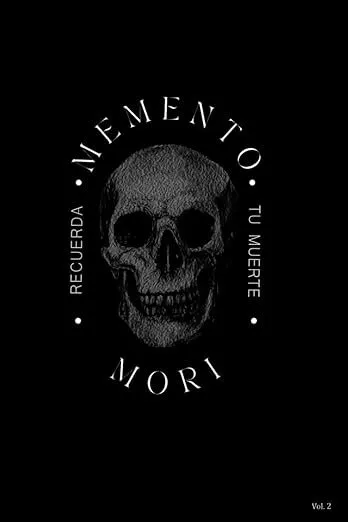
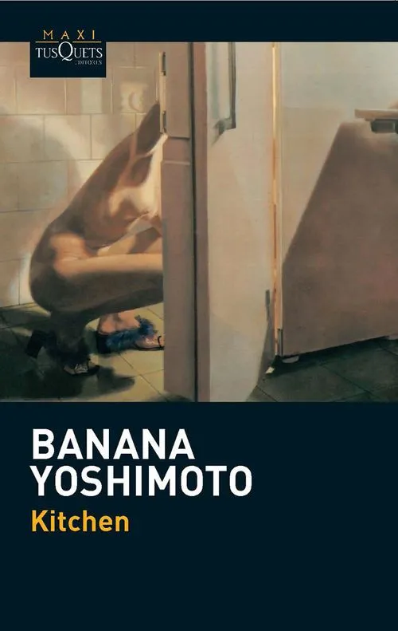
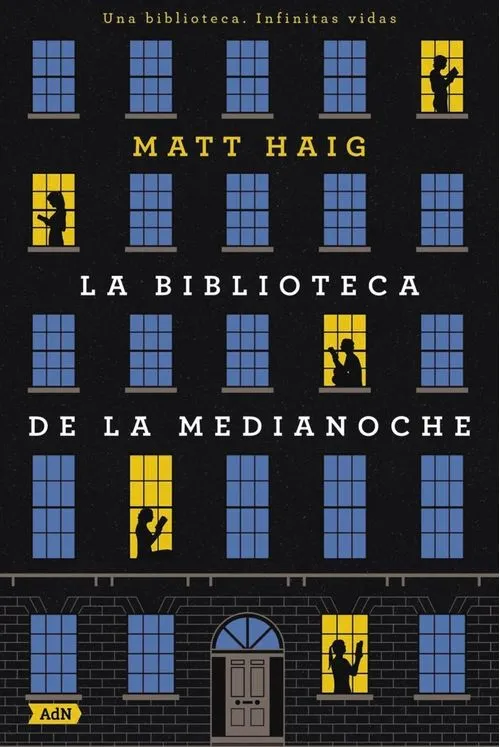
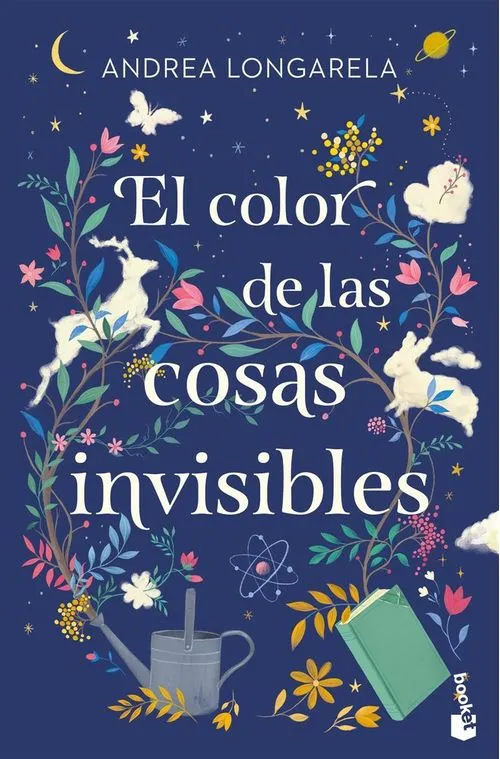
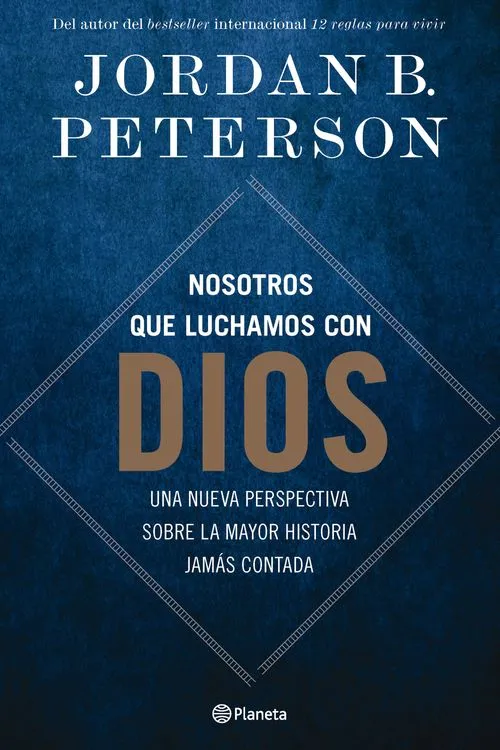
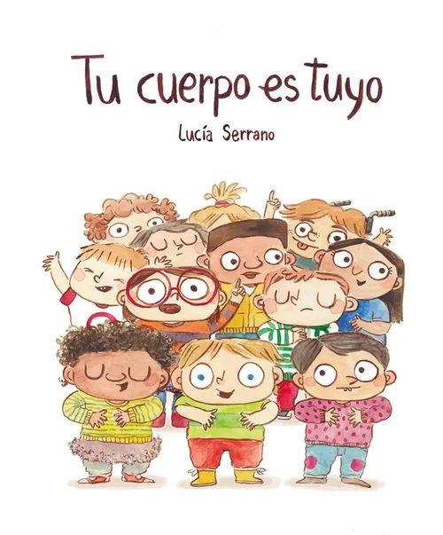
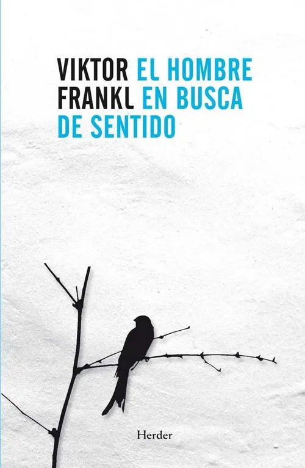
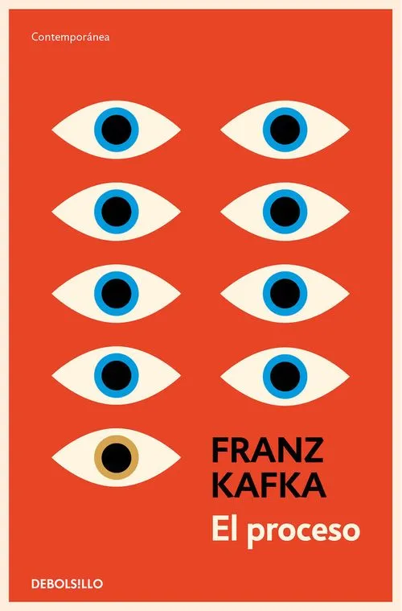
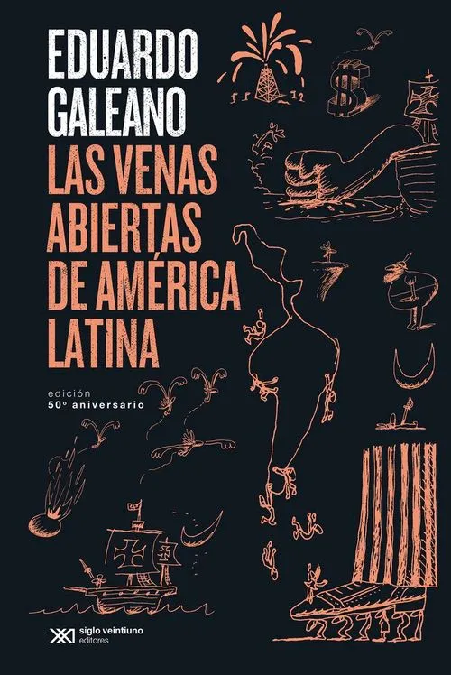
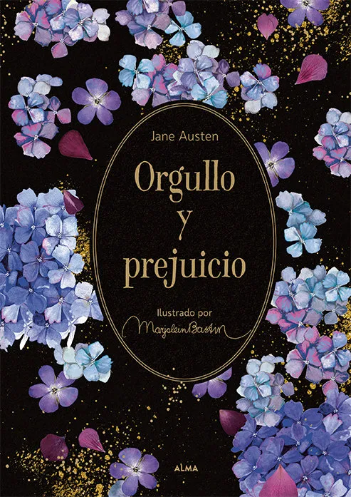
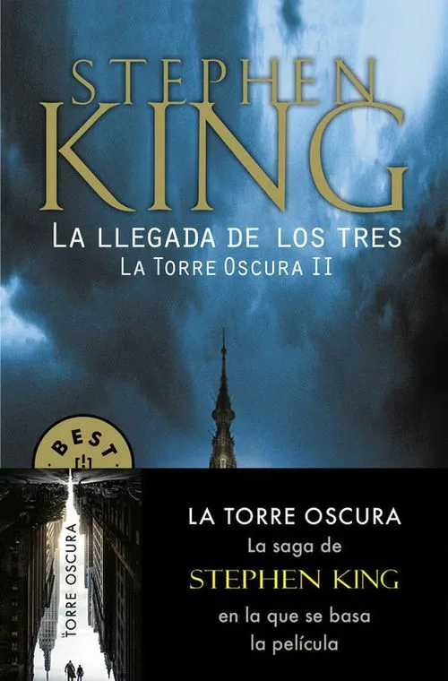
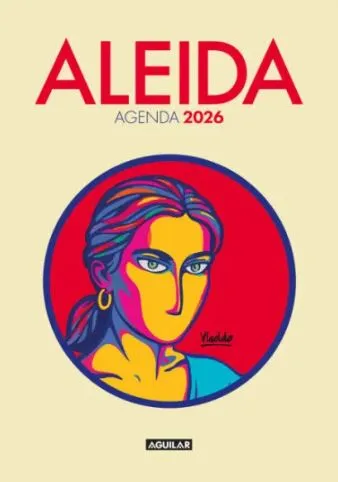
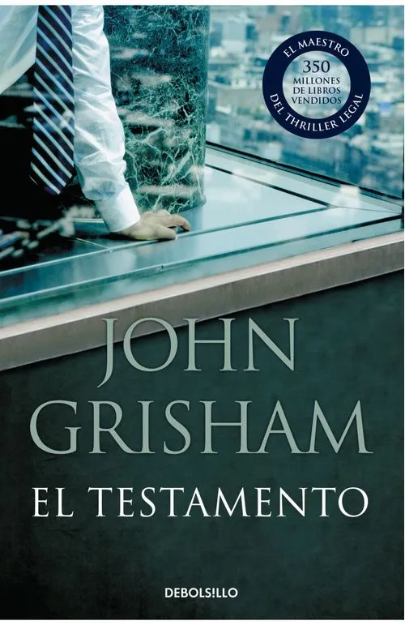
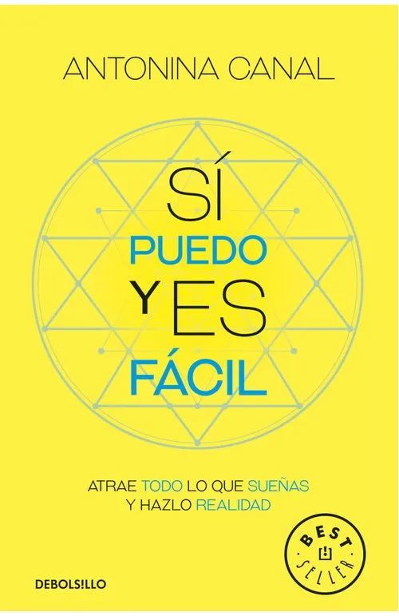